Universidad del Valle de Guatemala · Redes, Sección 10
Mini datacenter virtualizado
WordPress en dos capas · Proxmox bare-metal
Pablo Daniel Barillas Moreno 22193
Genser Andreé Catalán Espina 23401
Andrés Rafael Chivalán Marroquín 21534
Implementación final verificada · 10 de noviembre de 2026
01
Resultado alcanzado
Hipervisor: Proxmox VE 9.2 sobre hardware físico.
Sitio: https://laboratorio5.com.
Seguridad: llaves SSH, UFW y mínimo privilegio.
02
Arquitectura de red
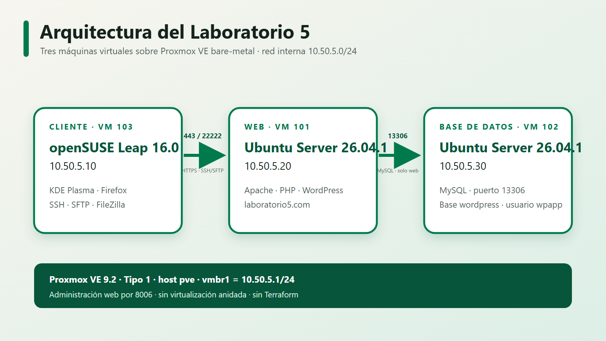
Red interna 10.50.5.0/24 sobre vmbr1; MySQL solo acepta a la VM web.
03
Proxmox Tipo 1
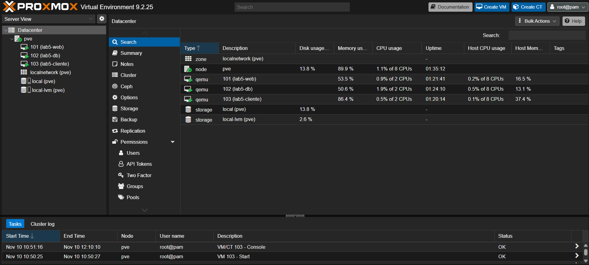
Bare-metal
Proxmox reemplaza el sistema operativo de la torre y ejecuta KVM/QEMU directamente.
- VM 101:
lab5-web - VM 102:
lab5-db - VM 103:
lab5-cliente
Sin Terraform y sin virtualización anidada.
04
Sistemas operativos
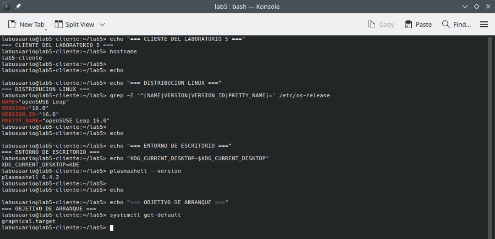
| VM | Sistema | Arranque |
|---|---|---|
| Cliente | openSUSE Leap 16.0 + KDE | graphical |
| Web | Ubuntu Server 26.04.1 | multi-user |
| DB | Ubuntu Server 26.04.1 | multi-user |
05
Conectividad interna
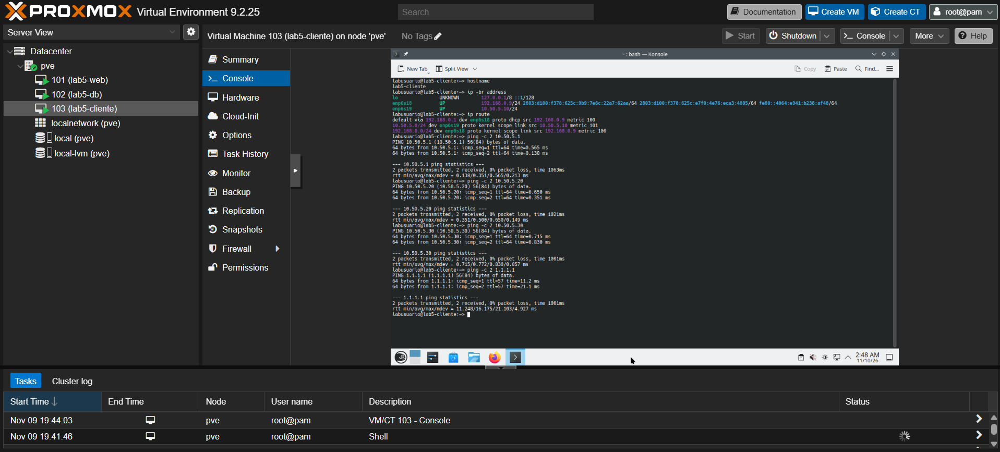
Desde openSUSE se alcanza 10.50.5.1, 10.50.5.20 y 10.50.5.30.
06
Administración por SSH
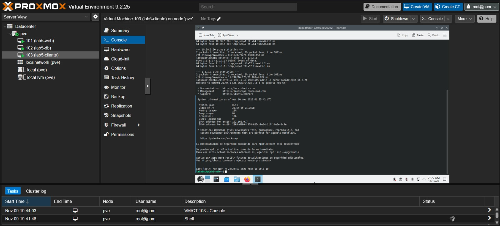
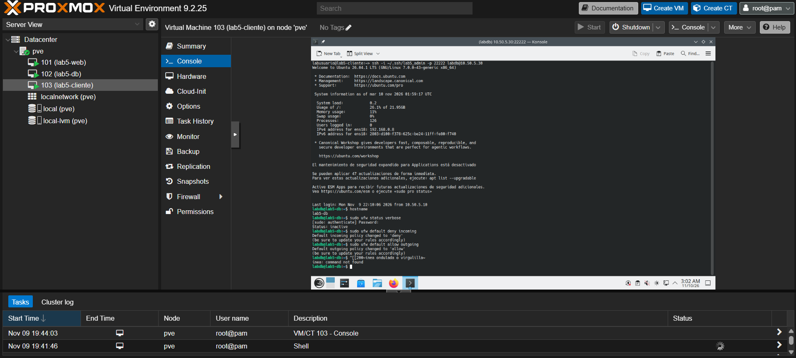
Autenticación con llaves, root remoto deshabilitado y puerto 22 cerrado.
07
MySQL como segunda capa
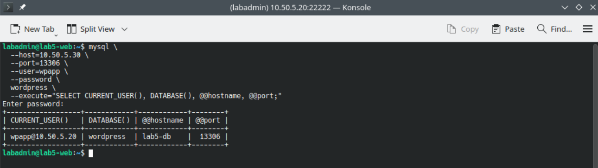
Flujo permitido
lab5-web → 10.50.5.30:13306
Cuenta limitada
wpapp@10.50.5.20 solo administra wordpress.*.
Puertos cerrados
3306 y 33060 no escuchan.
08
UFW y pruebas negativas
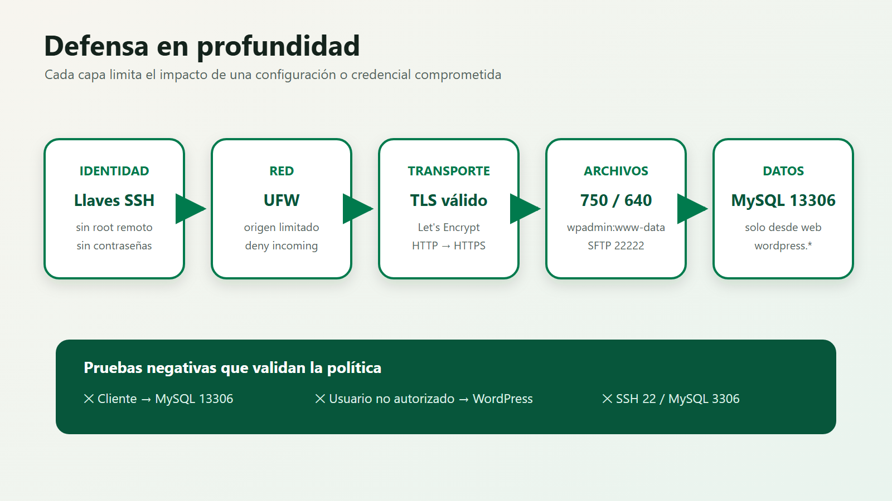
La prueba negativa confirma que el cliente no puede acceder a MySQL por 13306.
09
SFTP y permisos
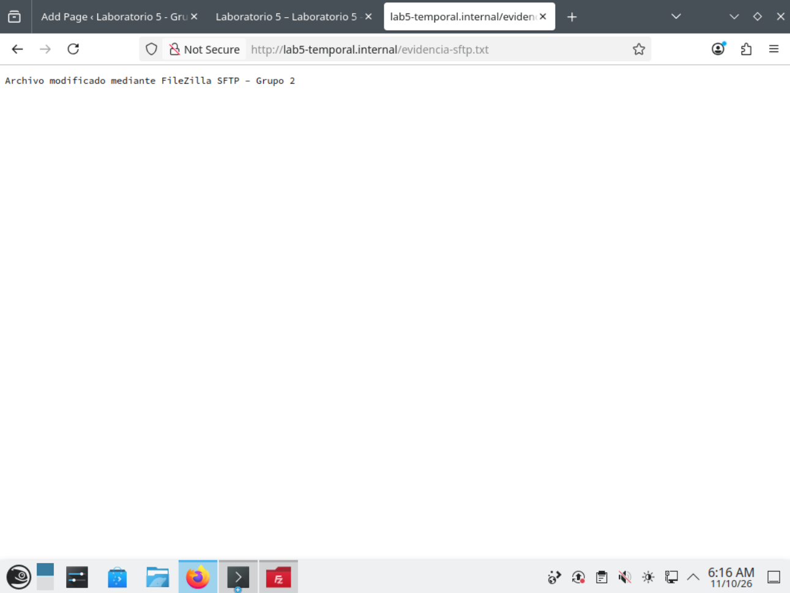
wpadmin por SFTP 22222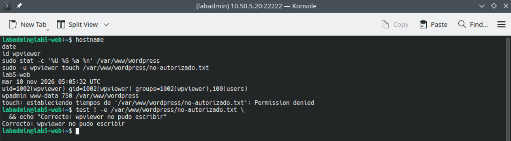
wpadmin:www-data · directorios 750 · archivos 640.
10
WordPress por HTTPS
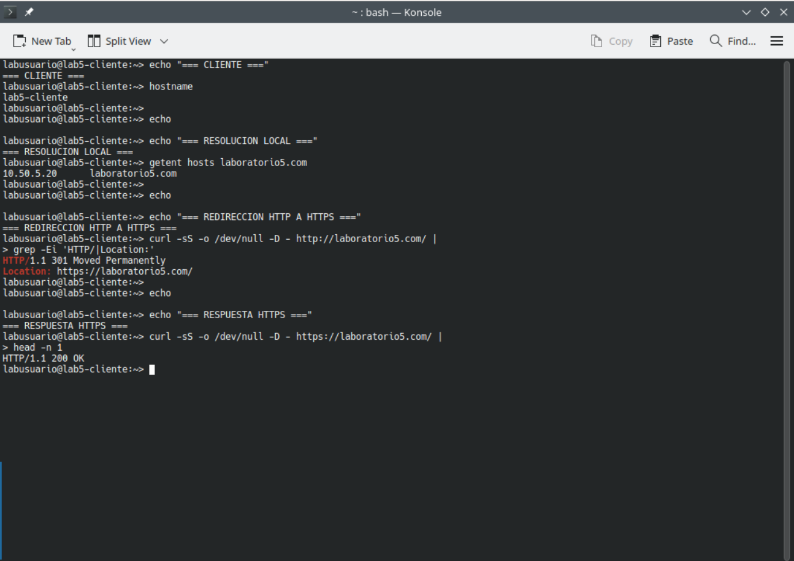
laboratorio5.com resuelve a la VM web, redirige HTTP y responde 200 por HTTPS; la consulta DB se prueba por separado.
11
Let's Encrypt + Route 53
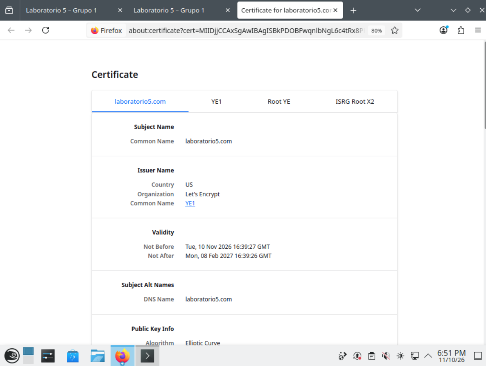
Validación DNS-01
Route 53 publica temporalmente _acme-challenge.
Certificado real
CN/SAN: laboratorio5.com.
Renovación
Temporizador activo, hook de Apache y dry-run exitoso.
12
Resolución y redirección
DNS local → 10.50.5.20HTTP → 301HTTPS → 200
13
Auditorías finales
Web
0 fallosApache, SSH, UFW y MySQL remoto.
DB
0 fallosMySQL 13306, privilegios y puertos cerrados.
Cliente
0 fallosConectividad, bloqueo DB, DNS y HTTPS.
Las pruebas positivas y negativas coinciden con la política diseñada.
14
Incidencias y aprendizaje
Cambio de router
Se corrigió la IP de gestión de Proxmox y se validó vmbr0.
MySQL en loopback
Se cambió bind-address a 10.50.5.30.
Dominio posterior
Se migró de un nombre temporal a Route 53 + Let's Encrypt sin reinstalar WordPress.
Defensa en profundidad
No se resolvieron problemas desactivando UFW ni ampliando permisos.
Demostración en vivo
Infraestructura completa y verificable
La demostración comienza desde lab5-cliente.
ProxmoxRedSSHMySQLSFTPHTTPS
Grupo 2 · Redes, Sección 10